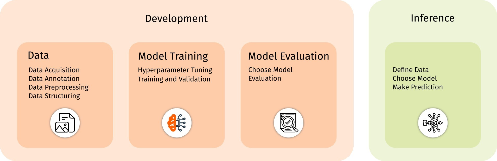

Our workflow standardizes the process of implementing deep learning (DL) use cases for electron microscopy (EM). It is designed for DL experts by streamlining training, testing, and inference through a PyTorch-based toolbox with a jupyter notebook based interface for easy use by EM experts. DL experts can easily contribute their own use cases using our template. This approach enables electron microscopists to work with a single, user-friendly implementation to get more familiar in the area of deep learning, while simplifying the development process for DL specialists.

Image processing icons created by BomSymbols - Flaticon, Ai brain icons created by Eklip Studio - Flaticon, Evaluation icons created by justicon - Flaticon, Inference icons created by Freepik - Flaticon
In the following, we will introduce the steps of the workflow to EM specialists as well as DL specialists. Please open the corresponding tab when reading.
In deep learning for electron microscopy (EM), model development refers to the process of creating and optimizing deep learning models to address specific challenges within EM. This process is built on three key steps.
Recognizing that expertise in data preparation primarily resides within EM labs, our workflow is designed to bridge the gap by providing EM experts with the necessary guidance from DL experts to develop their own datasets. This approach enables labs to prepare their data effectively for successful model training.
We design the workflow in such way, that use cases consist of a primary focus (i.e. counting objects in EM images), which is then showcased in an examplary application (i.e. quantification of virus particles in EM images). However, the use cases are not limited to the examplary application. We emphasize that the application can be changed within the context of the primary focus (i.e. quantification of midrochondira in EM images). By leveraging the introduced workflow, EM specialists are able to swap the application without the need of code changes, but only by exchaning the data. All nessecary information on how to exchange the data will be provided in a step-by-step guide within each use case.
Data acquisition involves collecting raw electron microscopy images or datasets. This may include imaging samples under various modalities (e.g., TEM, SEM) to capture diverse features. It is critical to ensure the dataset is representative of the problem domain to improve model performance. Expertise in sample preparation, imaging modalities and data collection plays an important role and usually lies within the EM-lab.
Data annotation is the process of labeling images for specific tasks such as segmentation, classification, or object detection. In the context of deep learning for electron microscopy (EM), proper annotation is crucial for training models that perform well on real-world data.
Each use case includes a detailed instruction on how to annotate data such that it can be used in a "plug-and-play" fashion. This way, we ensure that the training, validation and test data can be easily adapted to suit the specific needs of any EM lab without the need for additional code changes.
The provided use cases within this paper make use of the Computer Vision Annotation Tool (CVAT), an easy-to-use and easy-to-setup tool. For a step-by-step guide on how to get started, please refer to our Getting Started guide. Detailed use case specific instructions for EM specialists can be found in each corresponding use case.
Data Preprocessing is a critical step in preparing data for training deep learning models. This process typically involves the following steps: Data Reformatting, Image Enhancement, and Data Augmentation.
Data Reformatting ensures compatibility between the data provided by EM specialists and the code developed by DL experts. Image Enhancement may include techniques such as denoising or contrast adjustment to improve data quality. Data Augmentation, a widely-used method, artificially increases the diversity of training data without the need to acquire new samples. This augmentation process will be managed by the DL expert.
To ensure smooth data reformatting, each use case includes detailed guidance for EM specialists on
converting common EM data formats—such as 2D or 3D
.tif or .mrc files—into formats compatible with the use case requirements.
Similarly, DL experts will provide straightforward instructions for image enhancement, if necessary for the specific use case. Additionally, EM specialists are encouraged to leverage widely available tools for image enhancement, as this may further improve the performance of the trained models.
Data Structuring serves as the critical interface between DL experts and EM specialists. Proper structuring ensures that the data aligns with the requirements of the implemented use case, bridging the expertise of both domains effectively.
Data structuring tasks may involve renaming annotation files or organizing data into a predefined folder structure. To simplify this process, each use case provides detailed instructions outlining the required data structure, ensuring it is straightforward and easy to follow.
Model training focuses on creating and optimizing deep learning models to solve specific EM tasks. It includes configuring the training process, monitoring progress, refining modelparameters and finding a well suited set of hyperparameters to maximize performance.
Hyperparameters are adjustable parameters in machine learning and deep learning models that are set before training begins. Unlike model parameters, which are learned from the training data (e.g., weights in a neural network), hyperparameters are defined by the user and govern the learning process or model structure. Hence, hyperparameter tuning is a crucial process that can significantly enhance the performance of a deep learning model. It aims to find the best suited hyperparameters by leveraging a structured search. Specifically, when the dataset and hence the aim of the model is changed a hyperparameter seach is required. Successful tuning requires collaboration between DL and EM experts. Therefore, our toolbox simplifies this process by implementing an automatic hyperparameter search over a predefined search space. All hyperparamters of each use case are introduced within the corresponding notebook. The DL experts and developer of the notebooks will give a short explanation about each hyperparameter and its possible influence. A simple form, defined within the `1_Development.ipynb` of each use case, can be used to define the seach space over which hyperparameters will be tuned. However, for inexperienced users, the DL developers provide a default setup of a search space which can be used without additional interaction.
The training and validation of the model are primarily handled by deep learning experts. However, the logging module in our workflow provides EM specialists with an accessible way to gain insights into the training and validation process. Well-maintained logs help optimize the model and identify potential issues, such as overfitting or bias within data. By overseeing the process through the logger class, EM specialists can develop a fundamental understanding, fostering a solid foundation for effective collaboration.
In our workflow, logging is implemented using both standard output and a local logging directory at
logs/data-current-datetime/.
The logs capture the following key data:
log-path/TrainingRun/hyperparameters.json. For more details see the section above
(2.1.)
log-path/TrainingRun/checkpoints/best_model.pth, which will be loaded for inference.
Additionally, we save the latest model checkpoint for possible resuming of training in
log-path/TrainingRun/checkpoints/latest_model.pth
log-path/TrainingRun/plots/training_curves.png. These graphs show how a
model's performance changes over time during training, by plotting the models loss
against epochs. They help diagnose overfitting, underfitting, or other issues by comparing the
model's
performance on the training data (training curve) versus unseen validation data (validation curve).
These loss curves can be noisy (going up-and-down) but they should generally decrease over the
training
time (along the x-axis).
log-path/TrainingRun/samples/ This helps
users
visually assess the model's performance, such as how well it identifies
objects or segments regions, highlighting strengths and weaknesses in a more intuitive way.log-path/TrainingRun/test_results.txt
log-path/TrainingRun/samples/. It provides an intuitive, visual way to evaluate
strengths, weaknesses, and any patterns in the model's behavior beyond numerical metrics.
Additional text logs are being saved to log-path/TrainingRun/log.txt and
log-path/log.txt
Model evaluation assesses the trained model's performance using specific metrics to determine its effectiveness in solving the target task. This step ensures the model meets the requirements for deployment or further refinement. The way, how a model is being evaluated heavily depends on the model goal or aim. This will hence be provided by the DL expert within each use case.
Our workflow implementation typically selects the most recently trained model for evaluation. However, we also provide the flexibility to test previously trained (or shared) models by an optional input of the model checkpoint path by the EM specialist, based on a simple text input form.
The evaluation of the model is guided by the expertise of the DL specialist and does not require additional input from the EM specialist. Each use case defines specific metrics or evaluation methods tailored to the model's goals, with the DL specialist selecting these key metrics and methods that enable a comprehensive assessment of the model's performance. To support the EM specialist in making an informed decision about whether the model is ready for deployment or requires further refinement, the DL specialist provides a clear explanation of what each metric or method measures and how it contributes to the evaluation process.
Inference is the process of using a thoroughly trained and tested deep learning model to make predictions on new, unseen data. It finally allows to use the model to support the analysis of EM data.
To perform inference with a trained model, you first need to define the data you want the model to make predictions on. This could be a specific set of EM data that you wish to analyze. The data can be provided as a single file for prediction or as a folder containing multiple files, allowing for automatic processing of all the included data. This flexibility ensures the model can handle both individual cases and larger datasets efficiently.
The EM specialist is responsible for selecting a previously trained model for inference. It is essential that the model has been evaluated thoroughly according to the evaluation criteria provided by the DL expert, ensuring that the evaluation results are promising. Only models with strong performance, as indicated by the evaluation metrics, should be used for making predictions, ensuring reliable and accurate results.
The model will be used to make predictions on the provided data. However, it's important to remember that no trained model is perfect, and human oversight remains essential. The results generated by the model should always be carefully checked for plausibility to ensure accuracy and reliability.
BibTex Code Here